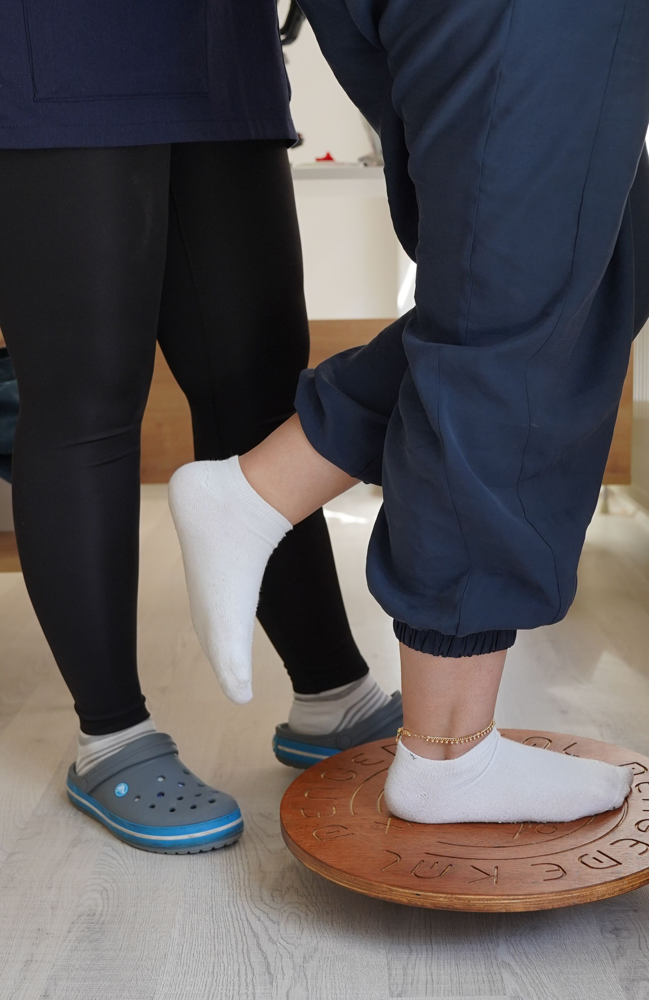
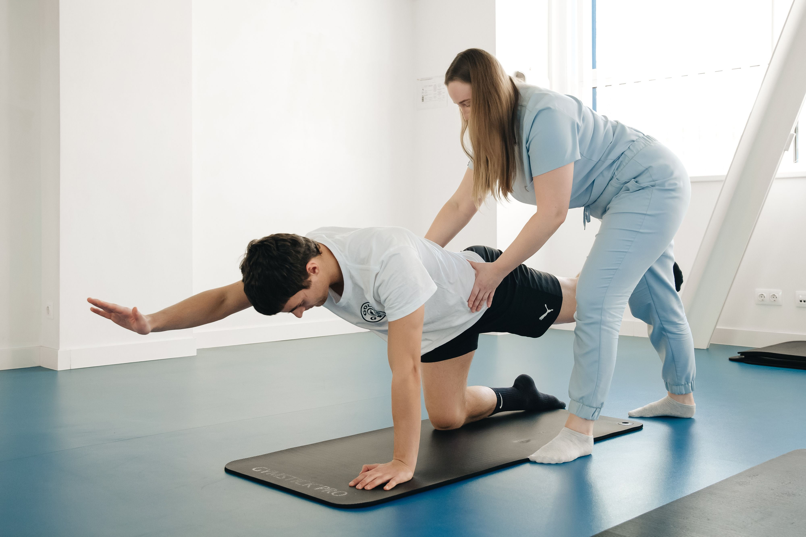

Eğitim İçeriği
Bölümde Nasıl Bir Eğitim Verilir?
Fizyoterapi ve rehabilitasyon eğitimi; insan vücudunun yapısını ve hareket mekaniğini öğrenmekle başlar, ölçme-değerlendirme, mesleki yöntemler ve klinik uygulamalarla devam eder.
01 • TEMEL TIP BİLİMLERİ
Vücut Yapısı ve İşleyişi
Anatomi, fizyoloji, biyomekanik ve patoloji dersleriyle kas, kemik, sinir ve dolaşım sistemlerinin nasıl çalıştığı ve nasıl etkilenebileceği öğrenilir.
02 • ÖLÇME, DEĞERLENDİRME VE YÖNTEMLER
Fonksiyonel Analiz ve Planlama
Kinezyoloji, egzersiz fizyolojisi, hareket ve denge değerlendirmesi ile rehabilitasyon yaklaşımlarını bireye göre yapılandırma becerisi kazandırılır.
03 • UYGULAMA VE STAJLAR
Laboratuvar ve Klinik Deneyim
Laboratuvar pratikleri, vaka incelemeleri ve çeşitli klinik ortamlardaki uygulamalarla teorik bilgiler gerçek süreçlerle pekiştirilir.

